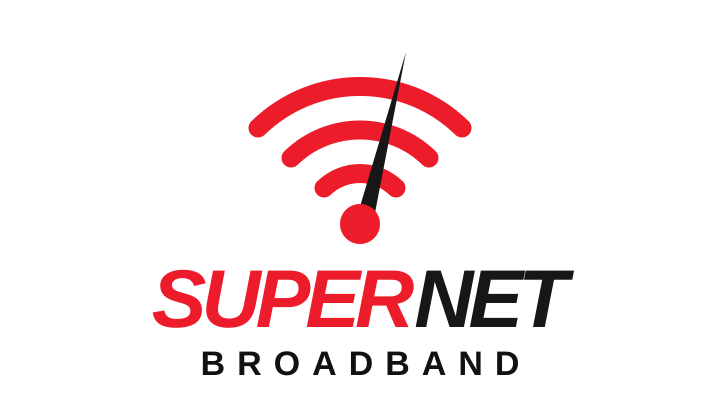

Network configuration
Access, routing and switching fundamentals in ISP environments.
HELLO, I'M FARHAN AHMED TURJOY
Computer Science & Engineering graduate working across ISP network operations, broadband support and IT infrastructure.
I work in ISP operations, helping maintain dependable broadband services through monitoring, troubleshooting and coordination.
My day-to-day work includes MikroTik WinBox, PPPoE and VLAN checks, OLT and ONU status review, network monitoring, customer support and working with NOC or field teams when an issue needs on-site attention.
I enjoy understanding how systems connect, finding the source of a problem and making service more stable for the people who depend on it.
A practical toolkit for day-to-day ISP and IT support.
Access, routing and switching fundamentals in ISP environments.
Supporting fibre access infrastructure and subscriber connectivity checks.
Checking device availability, service symptoms and network reachability.
Helping customers, resellers and internal teams resolve service issues.
Hands-on experience supporting broadband services and network operations.

Noakhali Supernet Broadband
How I approach network and IT support issues from first report to final confirmation.
Listen to the customer or team, review the alert, and identify the affected user, device or service.
Use monitoring tools and network checks to narrow down the issue — connectivity, configuration, fibre or equipment.
Apply a safe remote fix when possible, or coordinate with the NOC and field team for on-site action.
Confirm that service is stable, inform the relevant person and update the service record.
Selected university projects from my computing background.
Created a basic C compiler using C and Python, exploring translation of source code into lower-level instructions.
Designed an AI-based traffic control concept using sensors to help manage congestion and traffic flow.
Developed a chatbot concept for campus queries using natural language processing and automated responses.
Computer Science & Engineering graduate, continuing to build practical network and IT skills.
Dhaka International University
CGPA 3.16 / 4.00Chowmuhani Govt. SA College
GPA 3.75 / 5.00Arun Chandra High School
GPA 4.72 / 5.00OPEN TO THE RIGHT OPPORTUNITY
Interested in ISP network operations, technical support and IT infrastructure opportunities. Feel free to reach out.
Send an email ↗